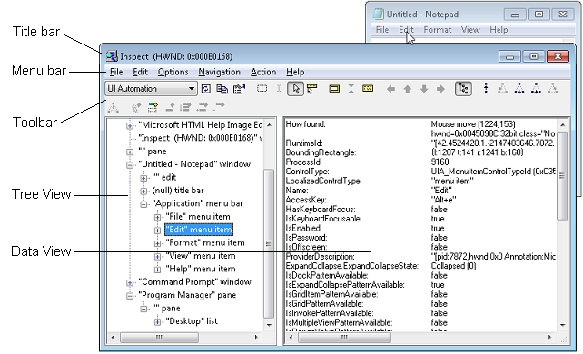

Accessibility testing
This topic describes various tools and procedures to help you verify the accessibility implementation of your Windows and web applications.
Successful user experiences
Programmatic access and keyboard access are critical requirements for supporting accessibility in your application. Testing the accessibility of your Windows applications, assistive technology (AT) tools, and UI frameworks is crucial to ensure a successful user experience for people with various disabilities and limitations (including vision, learning, dexterity/mobility, and language/communication disabilities), or those who simply prefer using a keyboard.
Without adequate support for accessible technology (AT) such as screen-readers and on-screen keyboards, users with vision, learning, dexterity/mobility, and language/communication disabilities or limitations (and users who just prefer using the keyboard) could find it difficult, if not impossible, to use your application.
Accessibility testing tools
Accessibility Insights
Accessibility Insights helps developers find and fix accessibility issues in both websites and Windows applications.
- Accessibility Insights for Windows helps developers find and fix accessibility issues in Windows apps. The tool supports three primary scenarios:
- Live Inspect lets developers verify that an element in an app has the right UI Automation properties simply by hovering over the element or setting keyboard focus on it.
- FastPass - a lightweight, two-step process that helps developers identify common, high-impact accessibility issues in less than five minutes.
- Troubleshooting allows you to diagnose and fix specific accessibility issues.
- Accessibility Insights for Web is an extension for Chrome and Microsoft Edge Insider that helps developers find and fix accessibility issues in web apps and sites. It supports two primary scenarios:
- FastPass - a lightweight, two-step process that helps developers identify common, high-impact accessibility issues in less than five minutes.
- Assessment - lets anyone verify that a web site is 100% compliant with accessibility standards and guidelines. Accessibility Insights also lets you review UI Automation elements, properties, control patterns, and events (similar to the Inspect and AccEvent legacy tools described in the following section).
Legacy testing tools
Note
The tools described here are still available in the Windows SDK, but we strongly recommend transitioning to Accessibility Insights.
The Windows Software Development Kit (SDK) includes several accessibility testing tools, including AccScope, Inspect and UI Accessibility Checker, among others.
You can launch the following accessibility testing tools either from a Microsoft Visual Studio command prompt or by navigating to the bin folder of wherever the Windows SDK is installed on your development machine.
AccScope
The AccScope Enables visual evaluation of an application's accessibility during the early design and development phases. AccScope is specifically intended for testing Narrator accessibility scenarios and uses the UI Automation information provided by an app to show where accessibility can be improved.
Inspect
Inspect enables you to select any UI element and view its accessibility data. You can view Microsoft UI Automation properties and control patterns and test the navigational structure of the automation elements in the UI Automation tree. It is especially useful for ensuring properties and control patterns are set correctly when extending a common control or creating a custom control.
Use Inspect as you develop the UI to verify how accessibility attributes are exposed in UI Automation. In some cases the attributes come from the UI Automation support that is already implemented for default XAML controls. In other cases the attributes come from specific values that you have set in your XAML markup, as AutomationProperties attached properties.
The following image shows the Inspect tool querying the UI Automation properties of the Edit menu element in Notepad.

UI Accessibility Checker
UI Accessibility Checker (AccChecker) helps you discover potential accessibility issues at run time. AccChecker includes verification checks for UI Automation, Microsoft Active Accessibility, and Accessible Rich Internet Applications (ARIA). It can provide a static check for errors such as missing names, tree issues and more. It helps verify programmatic access and includes advanced features for automating accessibility testing. You can run AccChecker in UI or command line mode. To run the UI mode tool, open the AccChecker folder in the Windows SDK bin folder, run acccheckui.exe, and click the Help menu.
UI Automation Verify
UI Automation Verify (UIA Verify) is a framework for manual and automated testing of the UI Automation implementation in a control or application (results can be logged). UIA Verify can integrate into the test code and conduct regular, automated testing or spot checks of UI Automation scenarios and is useful for verifying that changes to applications with established features do not have new issues or regressions. UIA Verify can be found in the UIAVerify subfolder of the Windows SDK bin folder.
Accessible Event Watcher
Accessible Event Watcher (AccEvent) tests whether an app's UI elements fire proper UI Automation and Microsoft Active Accessibility events when UI changes occur. Changes in the UI can occur when the focus changes, or when a UI element is invoked, selected, or has a state or property change. AccEvent is typically used to debug issues and to validate that custom and extended controls are working correctly.
Accessibility testing procedures
Test keyboard accessibility
The best way to test your keyboard accessibility is to unplug your mouse or use the On-Screen Keyboard if you are using a tablet device. Test keyboard accessibility navigation by using the Tab key. You should be able to cycle through all interactive UI elements by using Tab key. For composite UI elements, verify that you can navigate among the parts of elements by using the arrow keys. For example, you should be able to navigate lists of items using keyboard keys. Finally, make sure that you can invoke all interactive UI elements with the keyboard once those elements have focus, typically by using the Enter or Spacebar key.
Verify the contrast ratio of visible text
Use color contrast tools to verify that the visible text contrast ratio is acceptable. The exceptions include inactive UI elements, and logos or decorative text that doesn’t convey any information and can be rearranged without changing the meaning. See Accessible text requirements for more information on contrast ratio and exceptions. See Techniques for WCAG 2.0 G18 (Resources section) for tools that can test contrast ratios.
Note
Some of the tools listed by Techniques for WCAG 2.0 G18 can't be used interactively with a UWP app. You may need to enter foreground and background color values manually in the tool, make screen captures of app UI and then run the contrast ratio tool over the screen capture image, or run the tool while opening source bitmap files in an image editing program rather than while that image is loaded by the app.
Verify your app in high contrast
Use your app while a high-contrast theme is active to verify that all the UI elements display correctly. All text should be readable, and all images should be clear. Adjust the XAML theme-dictionary resources or control templates to correct any theme issues that come from controls. In cases where prominent high-contrast issues are not coming from themes or controls (such as from image files), provide separate versions to use when a high-contrast theme is active.
Verify your app with display settings
Use the system display options that adjust the display's dots per inch (dpi) value, and ensure that your app UI scales correctly when the dpi value changes. (Some users change dpi values as an accessibility option, it's available from Ease of Access as well as display properties.) If you find any issues, follow the Guidelines for layout scaling and provide additional resources for different scaling factors.
Verify main app scenarios by using Narrator
Use Narrator to test the screen reading experience for your app.
Use these steps to test your app using Narrator with a mouse and keyboard:
- Start Narrator by pressing Windows logo key + Ctrl + Enter. In versions prior to Windows 10 version 1607, use Windows logo key + Enter to start Narrator.
- Navigate your app with the keyboard by using the Tab key, the arrow keys, and the Caps Lock + arrow keys.
- As you navigate your app, listen as Narrator reads the elements of your UI and verify the following:
- For each control, ensure that Narrator reads all visible content. Also ensure that Narrator reads each control's name, any applicable state (checked, selected, and so on), and the control type (button, check box, list item, and so on).
- If the element is interactive, verify that you can use Narrator to invoke its action by pressing Caps Lock + Enter.
- For each table, ensure that Narrator correctly reads the table name, the table description (if available), and the row and column headings.
- Press Caps Lock + Shift + Enter to search your app and verify that all of your controls appear in the search list, and that the control names are localized and readable.
- Turn off your monitor and try to accomplish main app scenarios by using only the keyboard and Narrator. To get the full list of Narrator commands and shortcuts, press Caps Lock + F1.
Starting with Windows 10 version 1607, we introduced a new developer mode in Narrator. Turn on developer mode when Narrator is already running by pressing Control + Caps Lock + F12. When developer mode is enabled, the screen will be masked and will highlight only the accessible objects and the associated text that is exposed programmatically to Narrator. This gives a you a good visual representation of the information that is exposed to Narrator.
Use these steps to test your app using Narrator's touch mode:
Note
Narrator automatically enters touch mode on devices that support 4+ contacts. Narrator doesn't support multi-monitor scenarios or multi-touch digitizers on the primary screen.
Get familiar with the UI and explore the layout.
- Navigate through the UI by using single-finger swipe gestures. Use left or right swipes to move between items, and up or down swipes to change the category of items being navigated. Categories include all items, links, tables, headers, and so on. Navigating with single-finger swipe gestures is similar to navigating with Caps Lock + Arrow.
- Use tab gestures to navigate through focusable elements. A three-finger swipe to the right or left is the same as navigating with Tab and Shift + Tab on a keyboard.
- Spatially investigate the UI with a single finger. Drag a single finger up and down, or left and right, to have Narrator read the items under your finger. You can use the mouse as an alternative because it uses the same hit-testing logic as dragging a single finger.
- Read the entire window and all its contents with a three finger swipe up. This is equivalent to using Caps Lock + W.
If there is important UI that you cannot reach, you may have an accessibility issue.
Interact with a control to test its primary and secondary actions, and its scrolling behavior.
Primary actions include things like activating a button, placing a text caret, and setting focus to the control. Secondary actions include actions such as selecting a list item or expanding a button that offers multiple options.
- To test a primary action: Double tap, or press with one finger and tap with another.
- To test a secondary action: Triple tap, or press with one finger and double tap with another.
- To test scrolling behavior: Use two-finger swipes to scroll in the desired direction.
Some controls provide additional actions. To display the full list, enter a single four-finger tap.
If a control responds to the mouse or keyboard but does not respond to a primary or secondary touch interaction, the control might need to implement additional UI Automation control patterns.
You should also consider using the AccScope tool to test Narrator accessibility scenarios with your app. The AccScope tool topic describes how to configure AccScope to test Narrator scenarios.
Examine the UI Automation representation for your app
Several of the UI Automation testing tools mentioned previously provide a way to view your app in a way that deliberately does not consider what the app looks like, and instead represents the app as a structure of UI Automation elements. This is how UI Automation clients, mainly assistive technologies, will be interacting with your app in accessibility scenarios.
The AccScope tool provides a particularly interesting view of your app because you can see the UI Automation elements either as a visual representation or as a list. If you use the visualization, you can drill down into the parts in a way that you'll be able to correlate with the visual appearance of your app's UI. You can even test the accessibility of your earliest UI prototypes before you've assigned all the logic to the UI, making sure that both the visual interaction and accessibility-scenario navigation for your app is in balance.
One aspect that you can test is whether there are elements appearing in the UI Automation element view that you don't want to appear there. If you find elements you want to omit from the view, or conversely if there are elements missing, you can use the AutomationProperties.AccessibilityView XAML attached property to adjust how XAML controls appear in accessibility views. After you've looked at the basic accessibility views, this is also a good opportunity to recheck your tab sequences or spatial navigation as enabled by arrow keys to make sure users can reach each of the parts that are interactive and exposed in the control view.